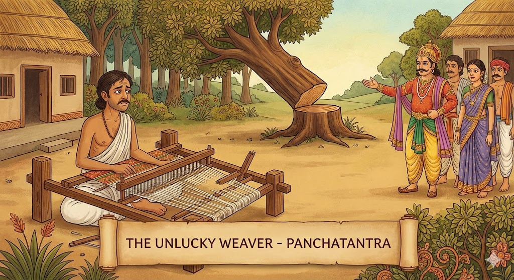
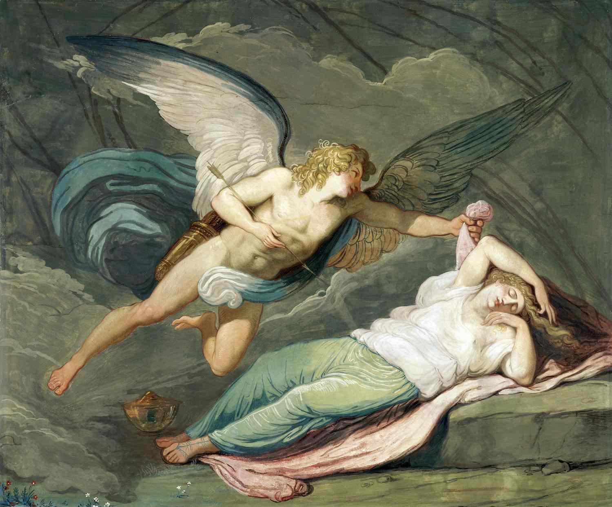
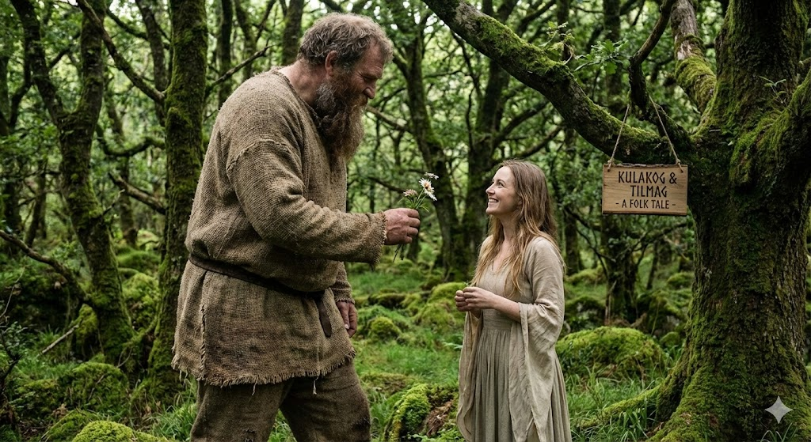
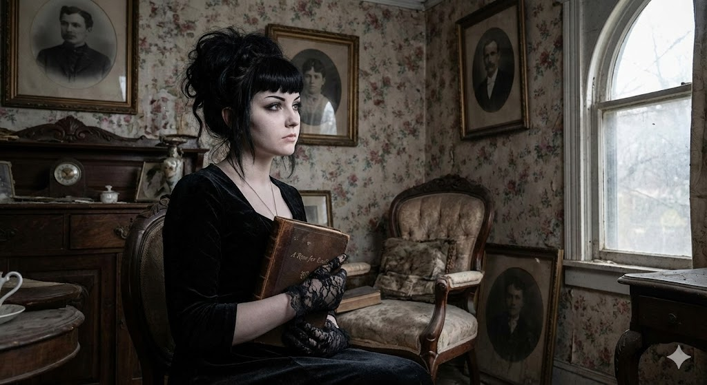
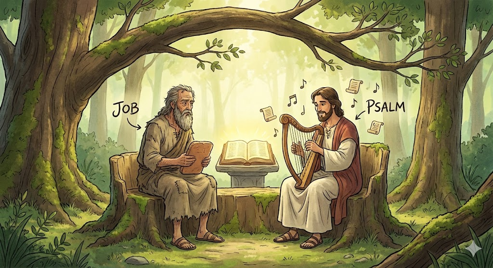

I’ve always loved reading because it lets me discover new
places, ideas people. Before taking Great Books, I read mostly
for fun. This subject changed that. It helped me slow down,
notice important details and think about what stories are really
trying to say.
I chose this course because I wanted to understand why certain
books are considered meaningful and how they continue to inspire
others. Along the way, I learned how stories can show real-life
struggles, beliefs and lessons.
Now, I read with more curiosity. Instead of just following the
plot, I try to understand the message behind it and how it
relates to everyday life.
Great Books is a course that explores important literary works
from different cultures, time periods and styles. Instead of
just reading stories for their plots, we learn to look deeper
and understand the ideas behind them.
We discuss how books reflect society, question traditions and
express different views about life. We also learn how to read
carefully, write clearly and share our thoughts with others.
Through this course, I discovered how literature helps us
understand people and the world better. It showed me that
stories are more than entertainment—they can shape how we
think and how we see real-life issues.
This digital portfolio represents my intellectual journey through Great Books, showcasing six comprehensive literary analyses that demonstrate my growth as a critical reader and analytical thinker. Each analysis applies different theoretical frameworks to examine how literature illuminates the complexities of human experience, social structures and cultural values. Through this collection, I demonstrate my ability to engage deeply with texts, construct evidence-based arguments and articulate sophisticated interpretations that reveal the enduring significance of great literature.
Structure, style & narrative techniques
Gender, power & patriarchal structures
Class conflict & social hierarchies
Unconscious mind & motivations
Universal symbols & mythic patterns
Active meaning construction

"The Unlucky Weaver" tells the story of Somilaka, a skilled but poor cloth-weaver who leaves his hometown in search of success. Despite earning wealth in another city, his money is mysteriously taken during his journey by Destiny. Repeatedly losing his earnings, Somilaka struggles with despair, nearly ending his life. Ultimately, Destiny grants him a boon but instructs him to observe two merchants to understand the value of wealth. Learning that happiness depends on enjoying what one has, Somilaka chooses only as much money as he can fully appreciate, returning home content with his life and earnings.
Key Elements Shown in the Text
A moral or symbolic reading emphasizes human effort balanced with acceptance of destiny. Somilaka’s journey illustrates perseverance, the consequences of desire and the ultimate realization that true happiness comes from contentment and understanding the proper use of wealth. The story uses repetition, dialogue with Destiny and contrasting characters to teach lessons about effort, fortune and the wisdom of moderation.

Psyche is a princess whose beauty becomes so famous that people
start admiring her more than the goddess of beauty, Venus. Feeling
jealous, Venus orders her son Cupid to make Psyche fall in love
with a horrible creature. Instead, Cupid accidentally falls in
love with her himself. Psyche is taken to a magical palace, where
she lives with a husband she is forbidden to see. Although she is
treated with love, she begins to doubt and grows curious. Her
sisters convince her to break the rule, so she secretly looks at
him. When she discovers he is Cupid, she accidentally injures him,
causing him to leave.
Determined to win him back, Psyche travels far and faces harsh
trials given by Venus. With help from the gods and even nature,
she completes each task. In the end, Cupid rescues her, makes her
immortal and they marry. Psyche becomes a goddess, welcomed among
the divine.
Archetypes and Symbols in the Story
In the end, Cupid and Psyche is more than a romantic tale. It shows the soul’s journey toward maturity through trust, sacrifice and love. The story teaches that growth is not always easy it requires patience, faith and resilience. Love, when genuine and trusting, becomes a force that transforms a person from the inside out.

The folktale tells the story of two animals, Kulakog and Tilmag, who live in the same place but behave very differently. Tilmag knows how to provide for herself and actively gathers food, while Kulakog refuses to work and relies on others to survive. Even when Tilmag prepares for the future, Kulakog continues to depend on her. In the end, Tilmag’s effort helps her survive, while Kulakog suffers the consequences of depending on someone else’s labor.
Social and Economic Themes
In a Marxist lens, Kulakog and Tilmag is more than a warning about laziness. It shows how unfair relationships arise when some benefit without working. The tale emphasizes that labor is valuable and essential and that a just society should respect the people who contribute to its survival. It reminds us that inequality grows when work is ignored and that communities become stronger when effort is shared rather than exploited.
The story follows a man who marries Morella, a woman deeply interested in questions about the soul and what happens after death. She spends her life studying mysterious ideas, which slowly begins to unsettle her husband. Before she dies, Morella speaks about the soul returning after death. Later, the man’s daughter grows up to look and act exactly like her, raising fear in his mind. When the child dies, he realizes that she might have been Morella reborn. The story leaves readers wondering whether this rebirth is supernatural or a result of the narrator’s guilt and obsession.
How Readers Shape the Meaning
Through a Reader Response lens, Morella becomes a story shaped by our personal beliefs and emotions. The horror works not because the narrator explains everything, but because he leaves us uncertain. Readers bring their own fears, curiosity and imagination, making the mystery of identity and rebirth feel real or psychological depending on how they interpret it.

“A Rose for Emily” tells the story of Emily Grierson, a woman who grows up under the strict control of her father. After his death, Emily isolates herself from the world and refuses to accept change. Later, she spends time with Homer Barron, but their relationship remains uncertain and troubling. When Emily dies, the townspeople discover Homer’s dead body hidden in one of her rooms—and a strand of Emily’s hair beside it. This shocking revelation shows how her fear of losing people led her to hold on to love in a disturbing, desperate way. The story reveals how loneliness, trauma and control can slowly break a person’s mind.
Psychological Symbols and Meanings
From a Psychoanalytic lens, Emily’s story becomes a tragedy of a mind shaped by strict upbringing, emotional repression and fear of abandonment. Her desperate attempt to control the people she loves reflects a deep need for security—one that ultimately leads to isolation, denial and a disturbing attachment to the past. Her actions, while shocking, come from a lifetime of emotional wounds that were never healed.

Psalm 23 shows trust in God as a caring shepherd who leads, protects and provides for His people. Even when walking “through the valley of the shadow of death,” the believer does not fear, because God gives guidance, safety and comfort.
Job 38 is part of God’s response to Job after his suffering. Instead of directly explaining Job’s pain, God asks questions about creation to show that His wisdom and power are far greater than human understanding.
Key Elements Shown in the Text
A formalist reading looks at how words, images and structure create meaning. The strong imagery of a shepherd in Psalm 23 builds comfort and trust, while the powerful questions in Job 38 create a tone of awe and humility. These literary choices make the messages of guidance and dependence on God clear and emotional.
By reading and analyzing six different stories, I have learned a lot about people, society and the way stories can teach lessons. Here are the main themes and insights I gained from this experience.
Across the six texts I studied, a common theme is that life is full of challenges and choices. The stories, whether about love, loss, identity, or inner struggles, show how people try to understand themselves while facing uncertainty. Characters encounter tests that push them to grow, rethink beliefs and confront difficult truths. Themes like resilience, morality and emotional struggle appear repeatedly. These works show that human experience is shaped by both inner feelings and the world around us.
These texts show how society and culture shape the way people think and act. Through different times and places, they reveal how rules, traditions, social classes and institutions influence what people can or cannot do. Many stories highlight unfair treatment based on gender, class, or status, where some benefit from privilege while others struggle. By showing characters who follow, resist, or suffer under these rules, the texts illustrate that culture can guide us but also limit us. Literature not only reflects society but encourages readers to think critically about the world around them.
A common theme is the search for personal identity. Characters often question their place in society, face inner conflicts, or reconsider their beliefs. They may resist expectations, challenge traditional roles, or try to discover their purpose. These stories show that identity is not fixed it grows from experiences, relationships and the pressures of the world around us.
Another key theme is how power and social inequality shape people's lives. Many stories show how class, gender and authority influence choices and limit freedom. Characters often face tension between those in power and those who are marginalized. These texts reveal societal systems that favor a few while disadvantaging others and show how people respond—whether by complying, resisting, or being affected by these structures.
Conflict whether internal, interpersonal, or societal is another major theme. Characters encounter challenges that push them to adapt, grow and see life differently. These struggles help them understand justice, responsibility, truth and human nature. In these stories, change is gradual, emerging through effort, reflection and resilience rather than sudden events.
Studying these texts together revealed recurring patterns of human behavior across different cultures and time periods. Despite their diverse backgrounds, the stories all explore universal questions about identity, power and morality. I was struck by how much society shapes personal choices and how characters often face hidden struggles shaped by rules and expectations beyond their control. This perspective helped me see that literature is not just about individual stories it reflects broader social forces. I also realized that conflict often drives growth, showing that meaningful change arises through challenges rather than comfort. Overall, these works deepened my understanding of human complexity and the factors that shape who we become.
Looking back on my time in the Great Books course, I have grown a lot as a reader, thinker and storyteller. This reflection shows how my understanding of stories has changed and how this course has influenced the way I see and think about the world.
This Great Books course transformed the way I approach literary analysis. At first, I focused mostly on plot and surface-level events, but engaging with various critical lenses helped me analyze literature more deeply. I learned to examine characterization, symbols, themes and underlying ideologies. Literature revealed multiple layers of meaning and I became an active reader who questions texts, considers authorial choices, and connects works to broader social, philosophical and psychological contexts. This course strengthened my ability to interpret evidence, understand human experience and see how stories reflect complex social dynamics.
The Psychoanalytic lens challenged me the most. It required exploring characters' hidden emotions, fears and desires, which are sometimes unknown even to themselves. Initially, linking these insights to story events was confusing. By revisiting works like A Rose for Emily and identifying clear examples of obsession or fear, I learned to apply this lens effectively. It helped me recognize the inner struggles of characters and understand their behavior on a deeper level.
The Reader Response lens was the most enlightening. It emphasized that reading is shaped by personal reactions. While reading Morella, my feelings of fear and curiosity influenced my interpretation. This lens taught me to notice my responses and appreciate that different readers may interpret the same text in unique ways. I plan to continue using this approach in the future.
Reading these texts broadened my perspective on life, society and human nature. Stories like Cupid and Psyche and The Crow and the Snake encouraged reflection on love, morality and intelligence. Texts such as Psalm 23 and Job 38 highlighted fairness, resilience and spiritual growth. These readings made me more empathetic, thoughtful and aware of human struggles, showing literature as a tool to understand people, society and myself.
This course was an invaluable learning experience. It encouraged critical thinking and deep reflection on stories. Exploring different lenses and diverse texts showed me that literature is more than entertainment—it teaches lessons about human nature, society and life. I will carry these insights forward, applying them to how I read, think and understand the world beyond the classroom.